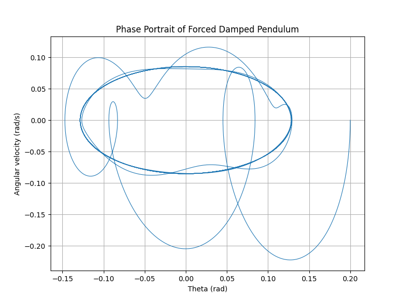
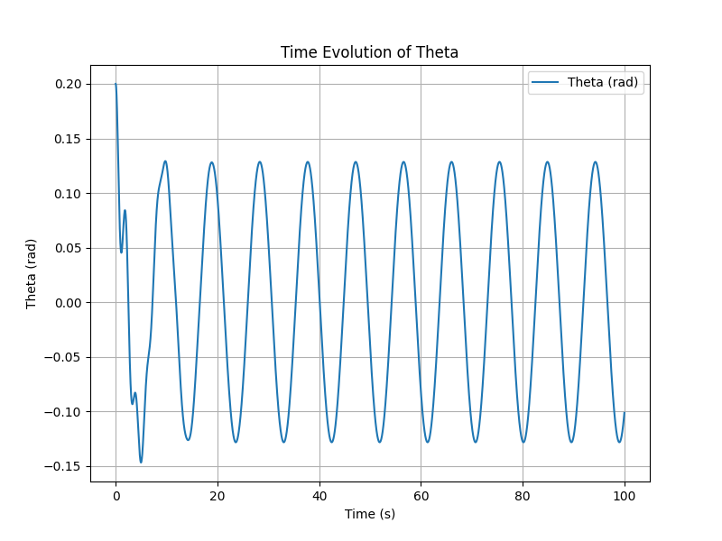
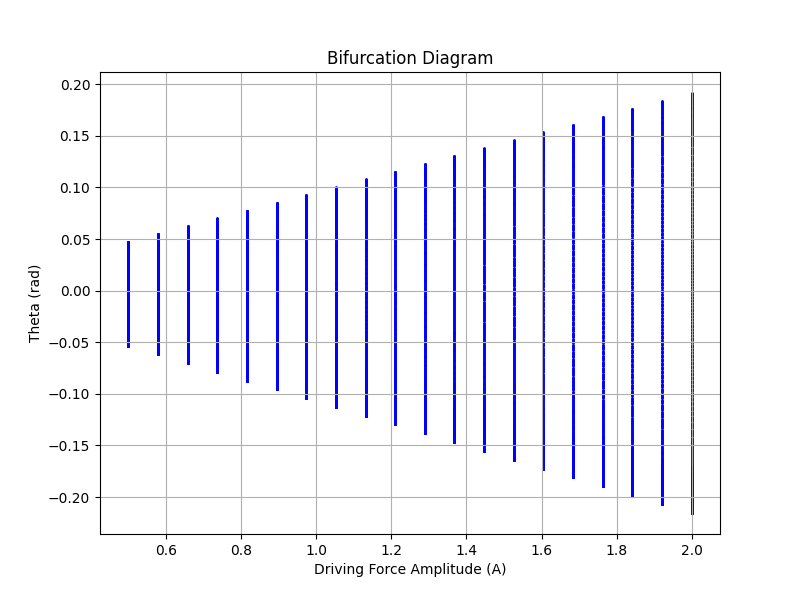

Investigating the Dynamics of a Forced Damped Pendulum
Introduction
The forced damped pendulum is an example of a system exhibiting complex behavior due to the interplay of damping, restoring forces, and external periodic driving forces. This simulation explores resonance, chaos, and quasiperiodic motion through numerical integration.
Mathematical Model
The motion of the forced damped pendulum is governed by the equation:
\(\ddot{\theta} + b \dot{\theta} + \frac{g}{L} \sin(\theta) = A \cos(\omega t)\)
where:
-
\(b\) is the damping coefficient,
-
\(g\) is the acceleration due to gravity,
-
\(L\) is the length of the pendulum,
-
\(A\) is the amplitude of the driving force,
-
\(\omega\) is the driving frequency.
Python Implementation
import numpy as np
import matplotlib.pyplot as plt
from scipy.integrate import solve_ivp
# Parameters
g = 9.81 # Gravity (m/s^2)
L = 1.0 # Length of pendulum (m)
b = 0.5 # Damping coefficient
A = 1.2 # Driving force amplitude
omega = 2/3 # Driving frequency
# Differential equation
def forced_damped_pendulum(t, y):
theta, omega_t = y
dydt = [
omega_t,
-b * omega_t - (g/L) * np.sin(theta) + A * np.cos(omega * t)
]
return dydt
# Time span
t_span = (0, 100)
t_eval = np.linspace(*t_span, 10000)
# Initial conditions
y0 = [0.2, 0] # Initial angle and velocity
# Solve ODE
sol = solve_ivp(forced_damped_pendulum, t_span, y0, t_eval=t_eval, method='RK45')
# Phase portrait
plt.figure(figsize=(8, 6))
plt.plot(sol.y[0], sol.y[1], lw=0.8)
plt.xlabel("Theta (rad)")
plt.ylabel("Angular velocity (rad/s)")
plt.title("Phase Portrait of Forced Damped Pendulum")
plt.grid()
plt.show()
# Poincare section (stroboscopic map)
poincare_times = np.arange(0, 100, 2*np.pi/omega)
poincare_points = []
for t_p in poincare_times:
idx = (np.abs(sol.t - t_p)).argmin()
poincare_points.append([sol.y[0][idx], sol.y[1][idx]])
poincare_points = np.array(poincare_points)
plt.figure(figsize=(8, 6))
plt.scatter(poincare_points[:, 0], poincare_points[:, 1], s=10, color='red')
plt.xlabel("Theta (rad)")
plt.ylabel("Angular velocity (rad/s)")
plt.title("Poincaré Section")
plt.grid()
plt.show()
# Time series plot
plt.figure(figsize=(8, 6))
plt.plot(sol.t, sol.y[0], label='Theta (rad)')
plt.xlabel("Time (s)")
plt.ylabel("Theta (rad)")
plt.title("Time Evolution of Theta")
plt.legend()
plt.grid()
plt.show()
# Bifurcation diagram
A_values = np.linspace(0.5, 2.0, 20)
th_values = []
for A in A_values:
def system(t, y):
return [y[1], -b * y[1] - (g/L) * np.sin(y[0]) + A * np.cos(omega * t)]
sol = solve_ivp(system, t_span, y0, t_eval=t_eval, method='RK45')
th_values.append(sol.y[0][-500:])
plt.figure(figsize=(8, 6))
for i, A in enumerate(A_values):
plt.scatter([A] * len(th_values[i]), th_values[i], s=1, color='blue')
plt.xlabel("Driving Force Amplitude (A)")
plt.ylabel("Theta (rad)")
plt.title("Bifurcation Diagram")
plt.grid()
plt.show()
Results
The simulation produces:
- Phase Portrait: Displays how the system evolves in phase space.

- Poincaré Section: A stroboscopic map showing discrete points at specific time intervals, revealing periodic or chaotic behavior.

- Time Series Plot: Shows the evolution of the pendulum’s angle over time.

- Bifurcation Diagram: Demonstrates the transition to chaos as the driving force amplitude increases.

Conclusion
The forced damped pendulum demonstrates a range of behaviors from simple oscillations to chaos, depending on parameter values. This study helps in understanding nonlinear dynamics in real-world systems like mechanical oscillators and electrical circuits.